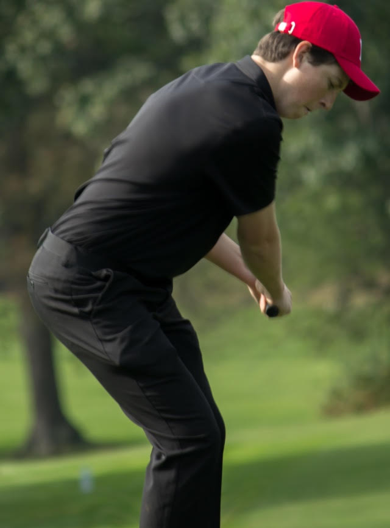

While I was in high school I participated in multiple sports, but my favorite to play is golf. This is a picture of me playing golf at a course back home, named Bellevue Golf Course. It is a very nice golf course and if you are interested in learning more you can go to their website here. I've been very interested in golf since my sophomore year of high school and I joined my high school team and played the rest of my high school career. What I like most about golf is, almost anyone can play, at any age. I look forward to playing a lot more golf in the future.
